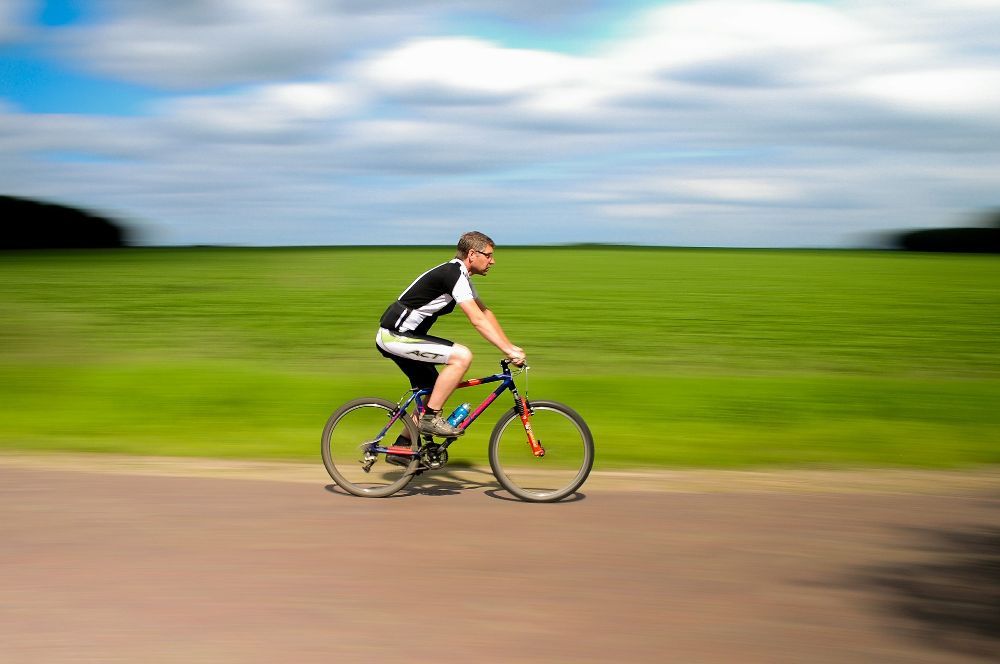

Psychology
The exercise effect
By Kirsten Weir
December 2011, Vol 42, No. 11
Published in American Psychological Association

Evidence is mounting for the benefits of exercise, yet psychologists don’t often use exercise as part of their treatment arsenal. Here’s more research on why they should.
When Jennifer Carter, PhD, counsels patients, she often suggests they walk as they talk. "I work on a beautiful wooded campus," says the counseling and sport psychologist at the Center for Balanced Living in Ohio.
Strolling through a therapy session often helps patients relax and open up, she finds. But that's not the only benefit. As immediate past president of APA's Div. 47 (Exercise and Sport Psychology), she's well aware of the mental health benefits of moving your muscles. "I often recommend exercise for my psychotherapy clients, particularly for those who are anxious or depressed," she says.
Unfortunately, graduate training programs rarely teach students how to help patients modify their exercise behavior, Carter says, and many psychologists aren't taking the reins on their own. "I think clinical and counseling psychologists could do a better job of incorporating exercise into treatment," she says.
"Exercise is something that psychologists have been very slow to attend to," agrees Michael Otto, PhD, a professor of psychology at Boston University. "People know that exercise helps physical outcomes. There is much less awareness of mental health outcomes — and much, much less ability to translate this awareness into exercise action."
Researchers are still working out the details of that action: how much exercise is needed, what mechanisms are behind the boost exercise brings, and why — despite all the benefits of physical activity — it's so hard to go for that morning jog. But as evidence piles up, the exercise-mental health connection is becoming impossible to ignore.
Mood enhancement
If you've ever gone for a run after a stressful day, chances are you felt better afterward. "The link between exercise and mood is pretty strong," Otto says. "Usually within five minutes after moderate exercise you get a mood-enhancement effect."
But the effects of physical activity extend beyond the short-term. Research shows that exercise can also help alleviate long-term depression.
Some of the evidence for that comes from broad, population-based correlation studies. "There's good epidemiological data to suggest that active people are less depressed than inactive people. And people who were active and stopped tend to be more depressed than those who maintain or initiate an exercise program," says James Blumenthal, PhD, a clinical psychologist at Duke University.
The evidence comes from experimental studies as well. Blumenthal has explored the mood-exercise connection through a series of randomized controlled trials. In one such study, he and his colleagues assigned sedentary adults with major depressive disorder to one of four groups: supervised exercise, home-based exercise, antidepressant therapy or a placebo pill. After four months of treatment, Blumenthal found, patients in the exercise and antidepressant groups had higher rates of remission than did the patients on the placebo. Exercise, he concluded, was generally comparable to antidepressants for patients with major depressive disorder (Psychosomatic Medicine, 2007).
Blumenthal followed up with the patients one year later. The type of treatment they received during the four-month trial didn't predict remission a year later, he found. However, subjects who reported regular exercise at the one-year follow-up had lower depression scores than did their less active counterparts (Psychosomatic Medicine, 2010). "Exercise seems not only important for treating depression, but also in preventing relapse," he says.
Certainly, there are methodological challenges to researching the effects of exercise, from the identification of appropriate comparison groups to the limitations of self-reporting. Despite these challenges, a compelling body of evidence has emerged. In 2006, Otto and colleagues reviewed 11 studies investigating the effects of exercise on mental health. They determined that exercise could be a powerful intervention for clinical depression (Clinical Psychology: Science and Practice, 2006). Based on those findings, they concluded, clinicians should consider adding exercise to the treatment plans for their depressed patients.
Mary de Groot, PhD, a psychologist in the department of medicine at Indiana University, is taking the research one step further, investigating the role exercise can play in a particular subset of depressed patients: those with diabetes. It's a significant problem, she says. "Rates of clinically significant depressive symptoms and diagnoses of major depressive disorder are higher among adults with diabetes than in the general population," she says. And among diabetics, she adds, depression is often harder to treat and more likely to recur. The association runs both ways. People with diabetes are more likely to develop depression, and people with depression are also more likely to develop diabetes. "A number of studies show people with both disorders are at greater risk for mortality than are people with either disorder alone," she says.
Since diabetes and obesity go hand-in-hand, it seemed logical to de Groot that exercise could effectively treat both conditions. When she reviewed the literature, she was surprised to find the topic hadn't been researched. So, she launched a pilot project in which adults with diabetes and depression undertook a 12-week exercise and cognitive-behavioral therapy (CBT) intervention program (Diabetes, 2009). Immediately following the program, the participants who exercised showed improvements both in depression and in levels of A1C, a blood marker that reflects blood-sugar control, compared with those in a control group. She's now undertaking a larger study to further explore exercise and CBT, both alone and in combination, for treating diabetes-related depression.
Fight-or-flight
Researchers have also explored exercise as a tool for treating — and perhaps preventing — anxiety. When we're spooked or threatened, our nervous systems jump into action, setting off a cascade of reactions such as sweating, dizziness, and a racing heart. People with heightened sensitivity to anxiety respond to those sensations with fear. They're also more likely to develop panic disorder down the road, says Jasper Smits, PhD, Co-Director of the Anxiety Research and Treatment Program at Southern Methodist University in Dallas and co-author, with Otto, of the 2011 book "Exercise for Mood and Anxiety: Proven Strategies for Overcoming Depression and Enhancing Well-being."
Smits and Otto reasoned that regular workouts might help people prone to anxiety become less likely to panic when they experience those fight-or-flight sensations. After all, the body produces many of the same physical reactions — heavy perspiration, increased heart rate — in response to exercise. They tested their theory among 60 volunteers with heightened sensitivity to anxiety. Subjects who participated in a two-week exercise program showed significant improvements in anxiety sensitivity compared with a control group (Depression and Anxiety, 2008). "Exercise in many ways is like exposure treatment," says Smits. "People learn to associate the symptoms with safety instead of danger."
In another study, Smits and his colleagues asked volunteers with varying levels of anxiety sensitivity to undergo a carbon-dioxide challenge test, in which they breathed CO2-enriched air. The test often triggers the same symptoms one might experience during a panic attack: increased heart and respiratory rates, dry mouth and dizziness. Unsurprisingly, people with high anxiety sensitivity were more likely to panic in response to the test. But Smits discovered that people with high anxiety sensitivity who also reported high activity levels were less likely to panic than subjects who exercised infrequently (Psychosomatic Medicine, 2011). The findings suggest that physical exercise could help to ward off panic attacks. "Activity may be especially important for people at risk of developing anxiety disorder," he says.
Smits is now investigating exercise for smoking cessation. The work builds on previous research by Bess Marcus, PhD, a psychology researcher now at the University of California San Diego, who found that vigorous exercise helped women quit smoking when it was combined with cognitive-behavioral therapy (Archives of Internal Medicine, 1999). However, a more recent study by Marcus found that the effect on smoking cessation was more limited when women engaged in only moderate exercise (Nicotine & Tobacco Research, 2005).
Therein lies the problem with prescribing exercise for mental health. Researchers don't yet have a handle on which types of exercise are most effective, how much is necessary, or even whether exercise works best in conjunction with other therapies.
"Mental health professionals might think exercise may be a good complement [to other therapies], and that may be true," says Blumenthal. "But there's very limited data that suggests combining exercise with another treatment is better than the treatment or the exercise alone."
Researchers are starting to address this question, however. Recently, Madhukar Trivedi, MD, a psychiatrist at the University of Texas Southwestern Medical College, and colleagues studied exercise as a secondary treatment for patients with major depressive disorder who hadn't achieved remission through drugs alone. They evaluated two exercise doses: One group of patients burned four kilocalories per kilogram each week, while another burned 16 kilocalories per kilogram weekly. They found both exercise protocols led to significant improvements, though the higher-dose exercise program was more effective for most patients (Journal of Clinical Psychiatry, 2011).
The study also raised some intriguing questions, however. In men and women without family history of mental illness, as well as men with family history of mental illness, the higher-dose exercise treatment proved more effective. But among women with a family history of mental illness, the lower exercise dose actually appeared more beneficial. Family history and gender are moderating factors that need to be further explored, the researchers concluded.
Questions also remain about which type of exercise is most helpful. Most studies have focused on aerobic exercise, though some research suggests weight training might also be effective, Smits says. Then there's the realm of mind-body exercises like yoga, which have been practiced for centuries but have yet to be thoroughly studied. "There's potential there, but it's too early to get excited," he says.
Buffering the brain
It's also unclear exactly how moving your muscles can have such a significant effect on mental health. "Biochemically, there are many things that can impact mood. There are so many good, open questions about which mechanisms contribute the most to changes in depression," says de Groot.
Some researchers suspect exercise alleviates chronic depression by increasing serotonin (the neurotransmitter targeted by antidepressants) or brain-derived neurotrophic factor (which supports the growth of neurons). Another theory suggests exercise helps by normalizing sleep, which is known to have protective effects on the brain.
There are psychological explanations, too. Exercise may boost a depressed person's outlook by helping him return to meaningful activity and providing a sense of accomplishment. Then there's the fact that a person's responsiveness to stress is moderated by activity. "Exercise may be a way of biologically toughening up the brain so stress has less of a central impact," Otto says.
It's likely that multiple factors are at play. "Exercise has such broad effects that my guess is that there are going to be multiple mechanisms at multiple levels," Smits says.
So far, little work has been done to unravel those mechanisms. Michael Lehmann, PhD, a research fellow at the National Institute of Mental Health, is taking a stab at the problem by studying mice — animals that, like humans, are vulnerable to social stress.
Lehmann and his colleagues subjected some of their animals to "social defeat" by pairing small, submissive mice with larger, more aggressive mice. The alpha mice regularly tried to intimidate the submissive rodents through the clear partition that separated them. And when the partition was removed for a few minutes each day, the bully mice had to be restrained from harming the submissive mice. After two weeks of regular social defeat, the smaller mice explored less, hid in the shadows, and otherwise exhibited symptoms of depression and anxiety.
One group of mice, however, proved resilient to the stress. For three weeks before the social defeat treatment, all of the mice were subjected to two dramatically different living conditions. Some were confined to spartan cages, while others were treated to enriched environments with running wheels and tubes to explore. Unlike the mice in the bare-bones cages, bullied mice that had been housed in enriched environments showed no signs of rodent depression or anxiety after social defeat (Journal of Neuroscience, 2011). "Exercise and mental enrichment are buffering how the brain is going to respond to future stressors," Lehmann says.
Lehmann can't say how much of the effect was due to exercise and how much stemmed from other aspects of the stimulating environment. But the mice ran a lot — close to 10 kilometers a night. And other experiments hint that running may be the most integral part of the enriched environment, he says.
Looking deeper, Lehmann and his colleagues examined the mice's brains. In the stimulated mice, they found evidence of increased activity in a region called the infralimbic cortex, part of the brain's emotional processing circuit. Bullied mice that had been housed in spartan conditions had much less activity in that region. The infralimbic cortex appears to be a crucial component of the exercise effect. When Lehmann surgically cut off the region from the rest of the brain, the protective effects of exercise disappeared. Without a functioning infralimbic cortex, the environmentally enriched mice showed brain patterns and behavior similar to those of the mice who had been living in barebones cages.
Humans don't have an infralimbic cortex, but we do have a homologous region, known as cingulate area 25 or Brodmann area 25. And in fact, this region has been previously implicated in depression. Helen Mayberg, MD, a neurologist at Emory University, and colleagues successfully alleviated depression in several treatment-resistant patients by using deep-brain stimulation to send steady, low-voltage current into their area 25 regions (Neuron, 2005). Lehmann's studies hint that exercise may ease depression by acting on this same bit of brain.
Getting the payoff
Of all the questions that remain to be answered, perhaps the most perplexing is this: If exercise makes us feel so good, why is it so hard to do it? According to the Centers for Disease Control and Prevention, in 2008 (the most recent year for which data are available), some 25 percent of the U.S. population reported zero leisure-time physical activity.
Starting out too hard in a new exercise program may be one of the reasons people disdain physical activity. When people exercise above their respiratory threshold — that is, above the point when it gets hard to talk — they postpone exercise's immediate mood boost by about 30 minutes, Otto says. For novices, that delay could turn them off of the treadmill for good. Given that, he recommends that workout neophytes start slowly, with a moderate exercise plan.
Otto also blames an emphasis on the physical effects of exercise for our national apathy to activity. Physicians frequently tell patients to work out to lose weight, lower cholesterol or prevent diabetes. Unfortunately, it takes months before any physical results of your hard work in the gym are apparent. "Attending to the outcomes of fitness is a recipe for failure," he says.
The exercise mood boost, on the other hand, offers near-instant gratification. Therapists would do well to encourage their patients to tune into their mental state after exercise, Otto says — especially when they're feeling down.
"Many people skip the workout at the very time it has the greatest payoff. That prevents you from noticing just how much better you feel when you exercise," he says. "Failing to exercise when you feel bad is like explicitly not taking an aspirin when your head hurts. That's the time you get the payoff."
It may take a longer course of exercise to alleviate mood disorders such as anxiety or depression, Smits adds. But the immediate effects are tangible — and psychologists are in a unique position to help people get moving. "We're experts in behavior change," he says. "We can help people become motivated to exercise."